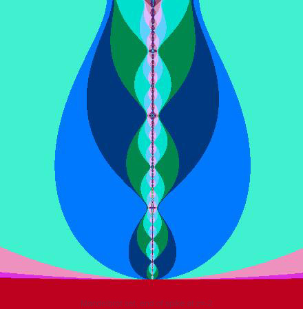
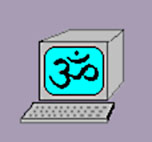
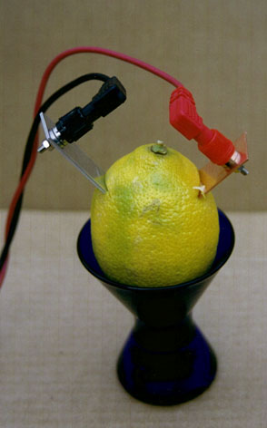

Institute of Holistic
Computer
Wellness 
Everybody working with computers has probably experienced days when
nothing
seemed to work, from an unusual frequency of typos to difficulties in
clicking
the mouse on exactly the right spot to downright crashes. Of course,
the
technical people always either blame the user for such things, or some
program, or the hardware. But when it comes to actually finding the
mistake,
the "experts" are often enough at loss just like anybody else. There is
a special term they use for the problems that are the hardest to
diagnose:
intermittent
failures. What they mean is, that although you may go through
exactly
the same steps that once led to a crash, it may not happen the next
time
round. But, of course, this also works other way around: doing exactly
what you always do may sometimes crash your machine.
Computers have become so incredibly complex that they also share
some
of the problems of living organisms. Everybody has heard about computer
virus infections. But this is just the tip of the iceberg. There are
many
computer diseases, and even before symptoms become obvious there is
often
a subtle imbalance, which is ultimately the cause of serious problems,
but which is impossible to diagnose for the computer operator hooked on
his pre-Aquarian mechanistic view of computers and, perhaps, the world.
We at the Institute of Holistic Computer Wellness have done
extensive
research on these problems, and have found that ideas from holistic
medicine
actually help to diagnose and to treat intermittent computer failures.
In some cases we achieved dramatic improvements. Click here for
information
on:
Computer
Homeopathy.
Unlike
conventional "allopathic" medicine, which uses artificial interventions
to oppose a disease process, homeopathic
medicine is based on the principle "like cures like," in
other
words that toxic substances, if extremely diluted, can serve as potent
and harmless remedies for the very symptoms they would cause if taken
in
large amounts. This is also the fundamental principle of Computer
Homeopathy. A remedy against a particular virus is obtained by
taking
the bit string of a virus, and diluting it with a random sequence of
bits,
which involves replacing half of the string by the random bits, and
reshuffling
by a sequence of random permutations. It is of the essence that these
bits
are truly random and not so-called pseudo-random numbers which are
generated
by a merely deterministic algorithm. After a number of such dilutions,
a
single bit is removed for use as the homeopathic remedy. When this bit
is placed in the root directory of your computer, it will enhance your
computer's natural resistance against attacks of that particular
virus.
Because the homeopathic data is not executed, it exerts its influence
gently
and naturally, without the harmful side effects and incompatibilities
sometimes
encountered with harsh purgatives or other allopathic anti virus
treatments.
The decimal dilution scale customary in Human Homeopathy ("X12" means
12 dilution steps by a factor of 10) is naturally replaced by a binary
dilution scale, by which B10 roughly corresponds to X3. The most
effective
dilutions found in our experiments were B56 and B64. Here are some
of our freeware homeopathic anti virus files. To use them, select the
green
bit with your mouse, then use your browser's copy and paste commands to
copy it into a new file, (called for example SIRCAM.TXT), which you
should
then save in your root directory. Do not be tempted to type
the bit in manually, as that would break the machine-to-machine
continuity
of the copy-and-paste procedure.
| Virus Source Material |
Dilution |
Bit |
Comments |
Sircam32 worm
|
B56 |
1 |
Classic worm, still worth guarding against.
|
| Red Team |
B64 |
0 |
Masqueradies as an anti-virus program |
Zafi D
|
B64 |
1 |
New Dec. 2004, masquerades as a Christmas Card
|
| Sober-I |
B56 |
0 |
Resurrects itself. Cure may require several
treatments.
|
Bagel.AT
|
B56 |
1 |
Masquerades as a joke.
|
Multimodal Mystery
Bit Therapy (MMBT). Our institute has pioneered a new
multimodal
therapy combining the principles of homeopathy and double-blind
experimentation. This may sound complicated, but underlying idea
is quite simple: by choosing
randomly among many toxins, in such a way that neither you nor we know
which one we have chosen, we can prepare a remedy effective against
all of them. In 1999 we used this approach quite successfully
against the Y2K problem*, and now we offer it against a collection of
the
100 most common and dangerous computer viruses. To prepare our
multimodal
antivirus therapy, we start with a collection of unlabelled disks,
each containing a different virus. The disks are placed in an urn
and one is chosen at random. This "mystery virus" is then
subjected
to a B64 dilution. A single bit from the diluted virus is then
electronically
transferred to a file on our server, taking care that no human has an
opportunity
to observe whether the bit value is zero or one (such observation, of
course,
would rule out about half the original viruses, rendering the treatment
ineffective against them). We offer this Multimodal Mystery
Bit
for
free download, but before you do so, read the following IMPORTANT
DIRECTIONS. In order to preserve effectiveness against
our entire collection of viruses, you should download the file and save
it on your root directory without opening or viewing it, or
allowing
anyone else to. To safely download, you should right-clickthe
following button, then follow the "Save Link As..." dialog to store
the file "../bennetc/MMBT.TXT" in your root directory. Do not left-clickthe
button, as that might cause the file to be opened in an editor,
exposing
it to damaging observation.
If you do accidentally view the mystery bit, and are unable to
forget
it, all is not lost. Simply wait a few weeks and download it
again
from our site. Approximately once a month we repeat the
homeopathic
double-blind preparation, resulting in a new (and possibly
different)
Mystery Bit.
*Starting in mid-1999, our site offered a multimodal mystery bit
"Y2KOK.TXT"
as a preventative for Y2K problems. Although only a few dozen
people
downloaded it, we believe that it protected most of the world's
computers
against serious Y2K problems, through a combination of
homeopathic
and morphogenetic (see below) effects.
Astrological system
analysis
For
many companies it has become standard practice to assemble teams on the
basis of astrological compatibility. Unfortunately, such simple
measures
for enhancing harmonious cooperation are rarely observed in computer
manufacturing.
We offer a program, which analyzes the astrological compatibility of
the
main system components of your Windows PC, such as motherboard, memory
units, hard disk and other drives, keyboard, and monitor, and, of
course,
yourself. The necessary "birth dates" are reconstructed from the serial
numbers, which our program automatically collects and interprets. Since
not only the production date, but also, e.g., the date of the last
complete
format operation are astrologically relevant, the program also gives
recommendations
of beneficial times for re-formatting your disk drives.
-
- Meditational Wait
States. Many
of us have experienced the beneficial influence of meditation on
intellectual
work. Computers normally are never put into such a state of cleansing
emptiness.
The "turned off" computer is more like a dead brain, whereas the normal
idle computer is usually really in a loop asking for keyboard or mouse
interrupts millions of times per second. We have developed a program,
which
will truly rest the CPU of your computer, by setting as many registers
equal to zero as possible, allowing for subsequent revival. For
achieving
more specific effects the program can also run a mantra or a prayer
through
the CPU registers. 
Note that no program written in a high level language such as C or
C++ can achieve such effects, since the control of individual CPU
registers
is highly machine dependent. Therefore, you will have to submit some
details
of your computing system in order to choose the right product.
-
- Web Disentanglement Device. The
theory of quantum computing is one of the most recent branches of
computer
science, based on the most advanced physical theory. Scientists working
in this field have proved that virtually every interaction between
physical
systems leaves a subtle trace of correlation called entanglement.
Thus computers, which have been connected to the internet for a long
time
become increasingly entangled with computers the world over. This
ultimately
leads to an increased rate of bits lost in transmission. We have
developed
a search engine, which can trace such entanglements with a given
computer
by sending out carefully constructed queries to the net. The
entanglements
are then treated, and normally reduced by more than 67 dB, by running a
special purpose decoherence program.
-  Natural
Food For Your Computer. The electricity you feed your
computer
is clearly an industrial product. Some of it comes from nuclear power
plants,
or other such places you would hardly want to go yourself. Moreover,
electricity
being distributed over a network, you have absolutely no control over
what
ecologically dubious places the current flowing through your computer
has
gone before. Although it is usually not practical to wean computers
completely
from commercial current, its harmful effects can be mitigated by
regular
supplementation with home-generated, organic electricity from one of
our
popular lemon batteries.
-
- Earth Ray Analyzer. Obviously,
geomantic radiation may be very damaging to computer operation.
Therefore,
it is also possible to detect such adverse influences by running a
suitable
program. Our program performs a statistical analysis of certain random
procedures carried out at system level. It takes about 24 hours to
either
come up with significant results on the level of earth rays or else can
assure you of a reasonably interference-free environment. Of course,
the
measurements can be repeated to verify the success of relocating your
computer.
- Subliminal Message
Filters.
An
increasing number of web sites include in their pages subliminal
messages,
which flash on the screen only for a single monitor cycle, and are
consciously
perceived only as a slightly irritating flicker. It has been shown,
however,
that such messages do register unconsciously, and therefore may
influence
subsequent decisions. The contents of subliminal messages found on the
web range from relatively harmless advertisements (e.g., for a certain
fast food chain), to political and religious indoctrination. We offer
patches
for the most common browsers, which will prevent a change of screen
content
just for a single frame. Moreover, an alarm will be sounded at every
attempt
to send a subliminal message.
-
- Bad
Vibe Filter. "Bad Vibes" are often more harmful than viruses,
subliminal messages or explicitly discourteous content ("flames")
received
over the internet. But just what are Bad Vibes? They
include,
but are not limited to, fraudulent or manipulative intentions, or
subconsciously
hostile moods on the part of the sender. Such harmful influences
can pass through a modem cable as quickly as a hostile glance in
a face-to-face meeting. To detect and remove bad vibes, a
physical
interaction of the greatest subtlety is required. We have found
that
specially selected quartz crystals, because of their piezoelectric
properties
and natural birefringence, are best suited for the job. After
prolonged
heavy use, you may find that one of our crystals loses its
effectiveness.
If this happens, do not attempt to fix it yourself. Simply return the
crystal
to us for re-annealing. This inexpensive heat treatment restores
the crystal's potency by removing and safely disposing of accumulated
internal
stresses. It should be noted that our crystals are bidirectional:
they remove outgoing as well as incoming bad vibes. We do not
sell
unidirectional crystals.
-
- Morphogenetic
Field Generator.
According
to the Theory of the Morphogenetic Field by Rupert
Sheldrake, the evolution of structures and shapes is a cooperative
effect: If a structure has evolved anywhere in the world, this
structure
becomes increasingly likely to emerge everywhere else. This effect
explains,
for example, the evolution of eggs into chickens, because there have
already
been so many chickens who have made this transition. Moreover, it can
act
retroactively so that, in this example, the chicken-to-be helps shaping
the organism. With the advent of computer technology it is no longer
necessary
to leave the emergence of the basic patterns to blind chance. Using our
products, you may generate them at will and at fantastic rates. Of
course,
the morphogenetic field generated in this way has the strongest effect
on like events, i.e., on patterns you may want to achieve on your
computer.
A particular favourite is the screen declaring you the winner in an
internet
casino. When running these programs it is recommended to deactivate
screen
savers, so that the desired pattern actually appears on the screen. But
of course, this is not strictly necessary, because the screen image is
merely a copy of certain memory areas. Therefore it is possible (though
slightly less effective) to run our programs with monitor turned off,
or
more interestingly, as a background task on multitasking operating
systems.
We are also conducting research into the possibility generating
morphogenetic
effects outside the computer. This is truly an experiment that might
change
the world. It would mean that you could let your computer do your
wishful
thinking AND be successful at it!
You are visitor number
 since 23 April 1999.
since 23 April 1999.
(Web Site (c) R. Werner, C.H. Bennett 1999, 2001.
Email
bennetc@bestweb.net)